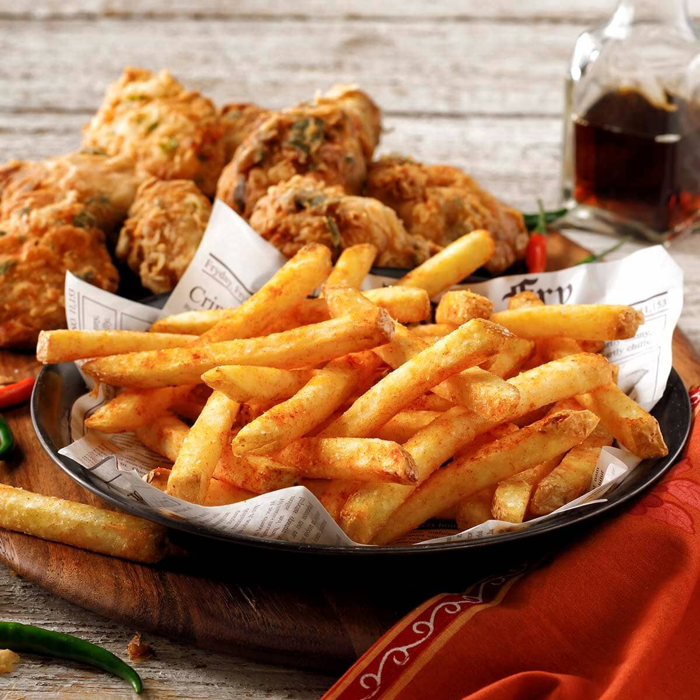

Chicken and Fries

Description
Succulent Chicken meat covered in flour and spices
with a side of well seasoned potato fries
Ingredients
- Meat: 1 pound chicken breast
- Flour: 1 cup of flower
- Potatos: 4 potatos
- Seasoning:
- Seasoning Salt
- Complete Seasoning
- Garlic Powder
- Ground Black Pepper
- Cooking Oil: Any 48 fl oz cooking oil bottle
Step by Step guide to making chicken and fries
- Season your meat and flour to taste using the same seasoning for both
- Pour oil in both the frying pan and deep pot to about half their height
then preheat both pots
- Cut potatos into fries and cover the seasoned chicken with the flour
- Once both pots are hot, put fries into deep pot and the chicken into
the frying pan
- Once the fries are golden brown you can take them out of the pot, place them into
a container with paper towels covering the botton to absorb the extra oil, then seasoned
them to taste using the seasoning salt.
- Once the chicken is golden brown on one side you can flip them over. When both sides
are sufficiently browned, take them out of the pot and place them on a container
with paper towels covering the bottom.